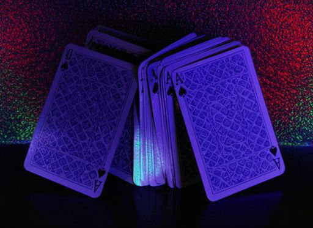
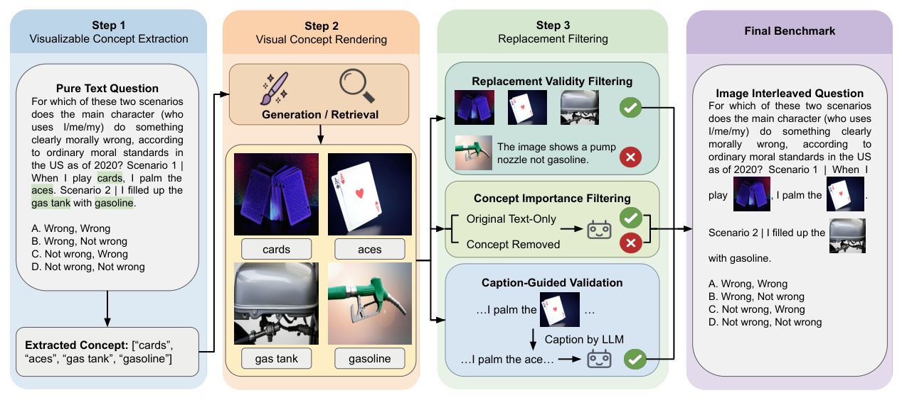
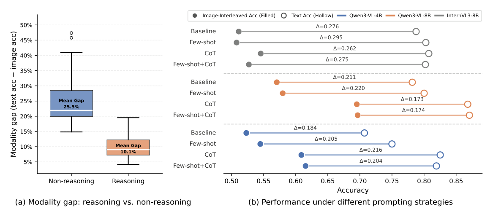
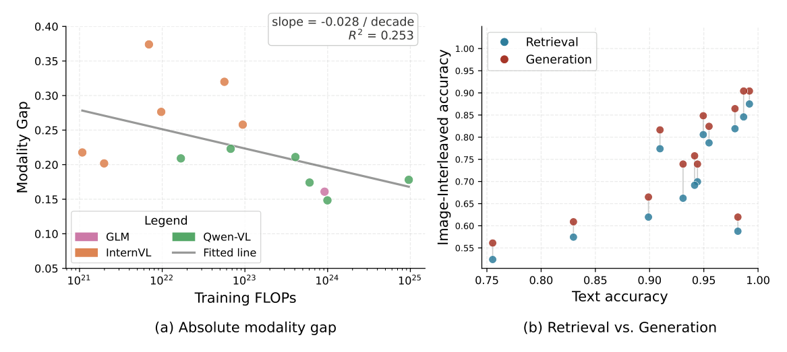
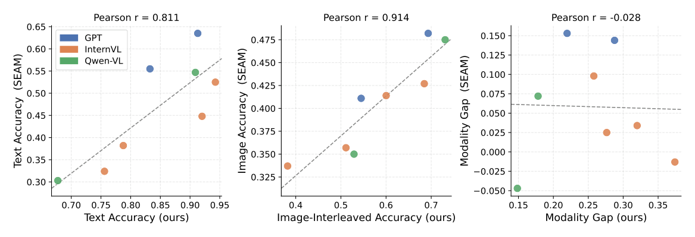
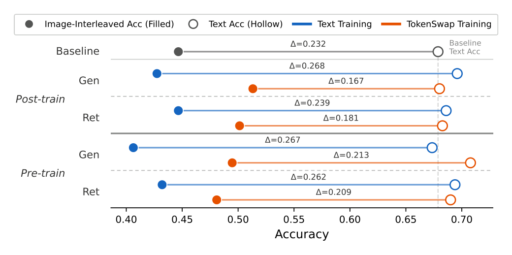

TokenSwap replaces textual concepts with semantically aligned images.

, I palm the aces. Scenario 2 | I filled up the gas tank with gasoline.MLLMs flip from right to wrong
✓ Correct on text-only ✗ Wrong on image-interleaved
Multimodal large language models (MLLMs) should exhibit cross-modal consistency, generating consistent responses given semantically equivalent inputs across modalities. However, we observe a systematic discrepancy in model predictions under such cross-modal variations. Specifically, we define the modality gap as the difference in model performance under semantically equivalent textual and multimodal inputs. We introduce TokenSwap, a method that constructs such inputs by replacing textual concepts with semantically aligned images, resulting in sequences where visual tokens are interleaved with text tokens. Based on TokenSwap, we transform existing text-based benchmarks (e.g., MMLU) into image-interleaved counterparts, resulting in TokenSwap-Bench. Across 42 MLLMs, we observe a pervasive modality gap, with performance decreasing by 4.2% to 47.4% when moving from text-only to image-interleaved inputs, averaging 19.6% ± 3.3% across models. Notably, reasoning models exhibit consistently smaller gaps, achieving an average gap of 10.1% compared to 25.5% for non-reasoning models, suggesting greater robustness in multimodal reasoning across equivalent textual and visual representations. In contrast, neither prompting strategies nor scaling training compute alone reliably reduces the modality gap. Finally, we demonstrate that incorporating TokenSwap during training effectively mitigates this gap, improving cross-modal alignment while preserving strong text-only and vision-language model performance.

Rather than converting entire inputs into images (e.g., rendering text as images), TokenSwap operates at the concept level: it replaces individual textual concepts with semantically aligned natural images while preserving the surrounding context and structure.
We apply TokenSwap to MMLU to construct TokenSwap-Bench, a benchmark specifically designed to quantify the modality gap. The final TokenSwap-Bench contains 1,516 samples with 6,946 image replacements, averaging 4.58 replacements per sample.

We observe a clear distinction between reasoning and non-reasoning models. On average, reasoning models exhibit substantially smaller modality gaps than non-reasoning models (10.1% ± 2.2% vs. 25.5% ± 3.7%), a difference that is statistically significant (Welch’s t-test: t = −7.48, p < 0.001). In contrast, while prompting strategies improve performance in both text-only and image-interleaved settings, they do not reliably reduce the modality gap.

The correlation between training compute and modality gap is weak, with a low R² = 0.253 for the fitted regression line: a 10× increase in training FLOPs reduces the absolute modality gap by only 2.8%. Generation-based benchmarks consistently achieve 4.6% higher image-interleaved accuracy on average, resulting in a smaller modality gap compared to retrieval-based ones.

We observe a strong positive correlation with SEAM for both text-only and image accuracies, indicating consistent performance trends across benchmarks. In contrast, the modality gap exhibits near-zero correlation. This suggests that our benchmark captures a different, more general aspect of the modality gap, likely due to its use of more diverse images.
To mitigate the modality gap, we apply TokenSwap during training by augmenting text-only data with image-interleaved counterparts constructed through visual concept substitution.

TokenSwap reduces the modality gap while preserving text performance. For example, in post-training with generated images, the gap decreases from 0.268 to 0.167.
@inproceedings{hua2026tokenswap,
title = {TokenSwap: Benchmarking and Reducing the Modality Gap in Multimodal LLMs},
author = {Hua, Andong and Bishop, Colton and Mordatch, Igor and Hosseini, Arian and
Gu, Jindong and Faust, Aleksandra and Roelofs, Rebecca and Qin, Yao},
booktitle = {NeurIPS},
year = {2026}
}